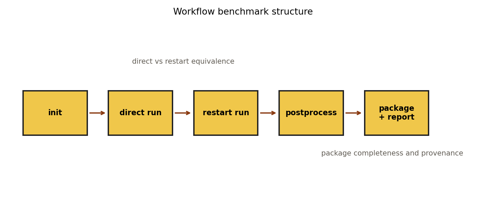
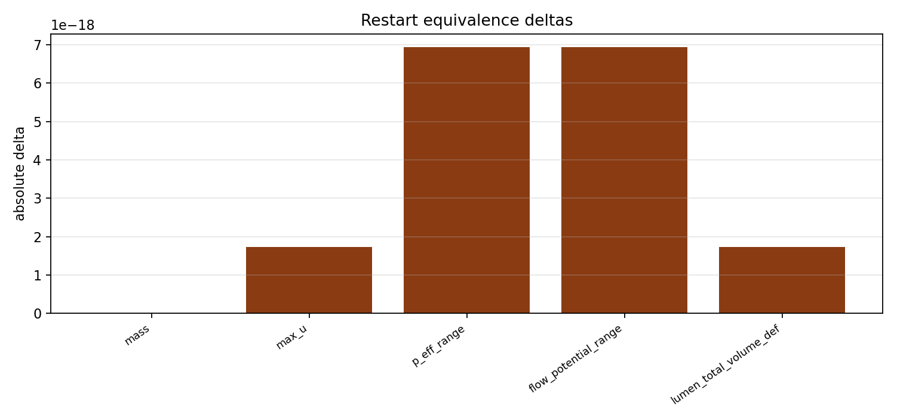
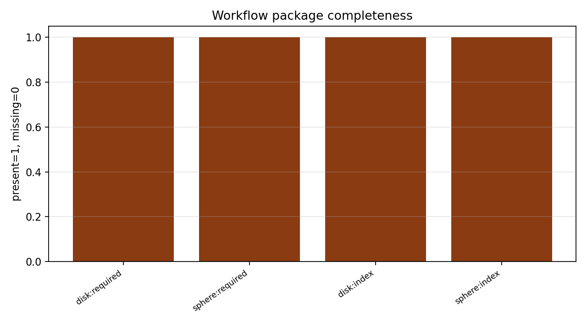

Benchmark
Restart Equivalence and Packaging
Family: workflow-provenance
Restart-equivalence, package-completeness, and provenance checks for the public reporting path.
Target and Success Criteria
target_kind: Expected baseline
Tier: full
Unknowns active: restart metrics and package contents
Frozen terms: canonical disk and sphere workflow fixtures
Comparison grammar: Expected / Achieved
comparison_validity: direct
Tickets: vv-014
What This Benchmark Verifies
This workflow benchmark proves restart equivalence and package/report completeness while keeping restart-state checks separate from fixed-mesh provenance checks.
Benchmark Narrative
Narrative
Physical Problem
This page verifies the public workflow surface itself: direct run, restart, postprocess, package, and comparison-report generation on canonical fixed-mesh fixtures.
Narrative
Target Definition
The direct run is the expected state target for restart equivalence, while package and comparison-report outputs are checked as a separate provenance lane against the committed fixed-mesh baseline surface.
Narrative
Why These Observables
The workflow schematic shows the benchmark structure, packaged media provide raw evidence that the public artifacts exist, and the restart-delta and package-completeness plots show which extracted metrics are compared to validate restart equivalence and provenance.
Narrative
How To Read The Error
Small restart deltas with missing artifacts mean packaging/reporting broke rather than physics. Large restart deltas with intact packages point to checkpoint or state-restore corruption. Report-role mismatches indicate provenance drift even if solver outputs agree.
Narrative
Reference Qualification
The harness compares direct and restarted runs built from the canonical disk workflow and checks package/report outputs against the committed fixed-mesh baseline surface.
Narrative
Limitations
This is a workflow/provenance benchmark, not a new physics validation page. It covers the fixed-mesh public surface only.
disk_required_artifacts_present
pass
sphere_required_artifacts_present
pass
disk_index_html_exists
pass
sphere_index_html_exists
pass
comparison_report_status
pass
Setup Schematic
figure

Abstract workflow schematic for the direct, restart, postprocess, package, and report lanes compared on this page.
plots/setup-schematic.png
Target Comparison
plot

Absolute deltas between the direct and restarted workflow lanes.
plots/restart-deltas.png
Error Summary
plot

Required-artifact and index-page completeness across the packaged workflow outputs.
plots/package-artifact-status.png
Scalar Summary
| Label | Value | Unit | Comparison | Threshold | Severity |
|---|---|---|---|---|---|
| disk_required_artifacts_present | true | true | true | pass | |
| sphere_required_artifacts_present | true | true | true | pass | |
| disk_index_html_exists | true | true | true | pass | |
| sphere_index_html_exists | true | true | true | pass | |
| comparison_report_status | warn | pass | pass | warn |
Evidence Table
| Label | Metric | Comparison | Threshold | Severity |
|---|---|---|---|---|
| mass | mass | 0 | 0 | pass |
| max_u | max_u | 1.73472e-18 | 0 | pass |
| p_eff_range | p_eff_range | 6.93889e-18 | 0 | pass |
| flow_potential_range | flow_potential_range | 6.93889e-18 | 0 | pass |
| lumen_total_volume_def | lumen_total_volume_def | 1.73472e-18 | 0 | pass |
Series Overview
| Plot | Group | Observable | Case | Level | Target |
|---|---|---|---|---|---|
| mass | expected_vs_achieved | mass | restart | workflow | direct run |
| max_u | expected_vs_achieved | max u | restart | workflow | direct run |
| p_eff_range | expected_vs_achieved | p eff range | restart | workflow | direct run |
| flow_potential_range | expected_vs_achieved | flow potential range | restart | workflow | direct run |
| lumen_total_volume_def | expected_vs_achieved | lumen total volume def | restart | workflow | direct run |
Cases
Case
direct
Direct run used as the workflow target.
Case
restart
Restarted run compared against the direct target.